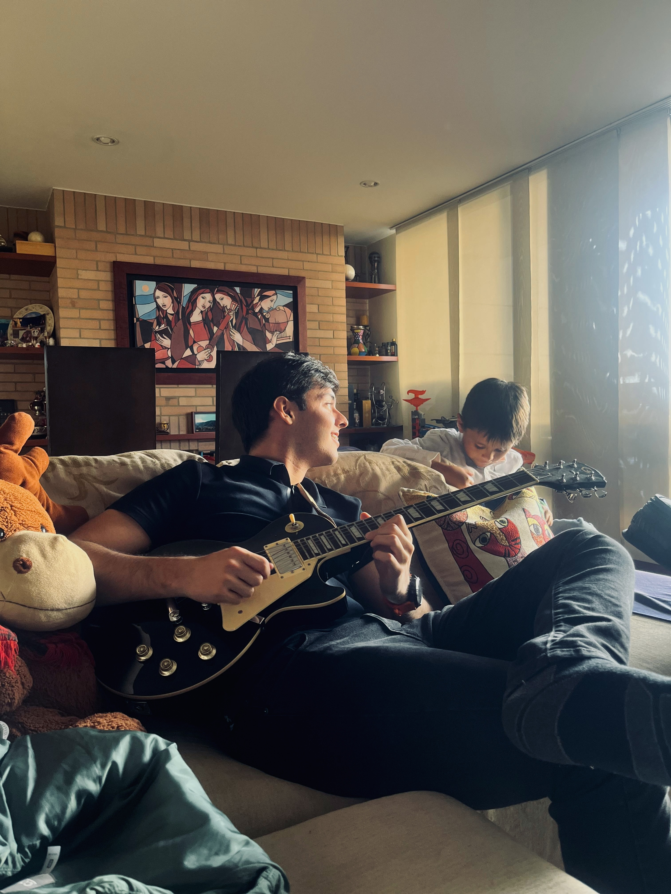
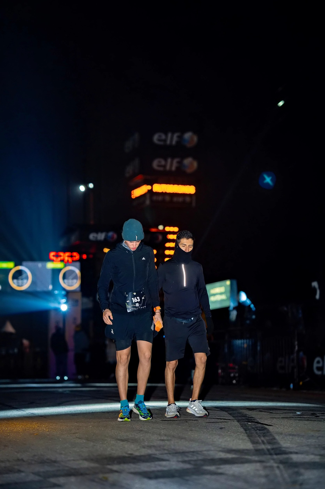
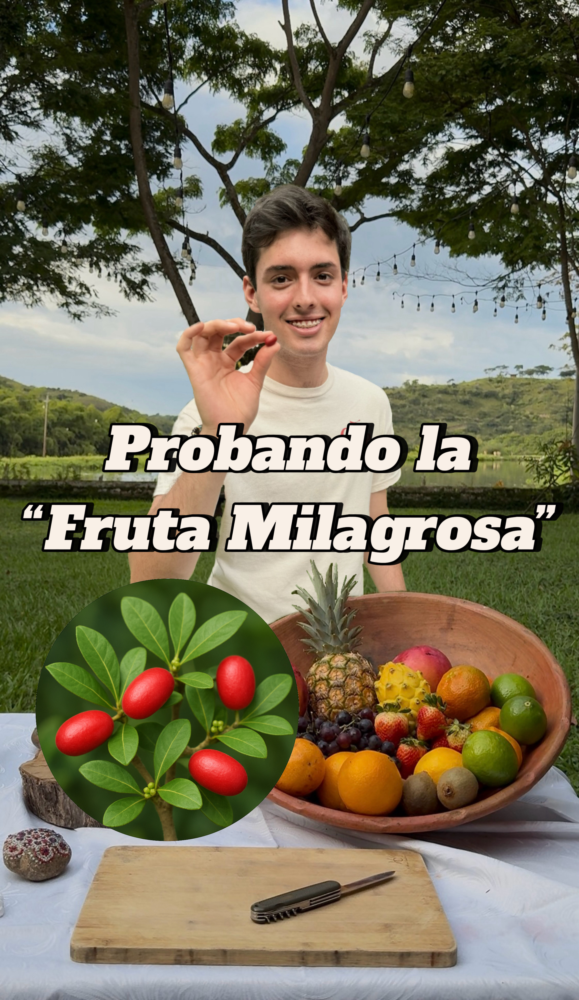
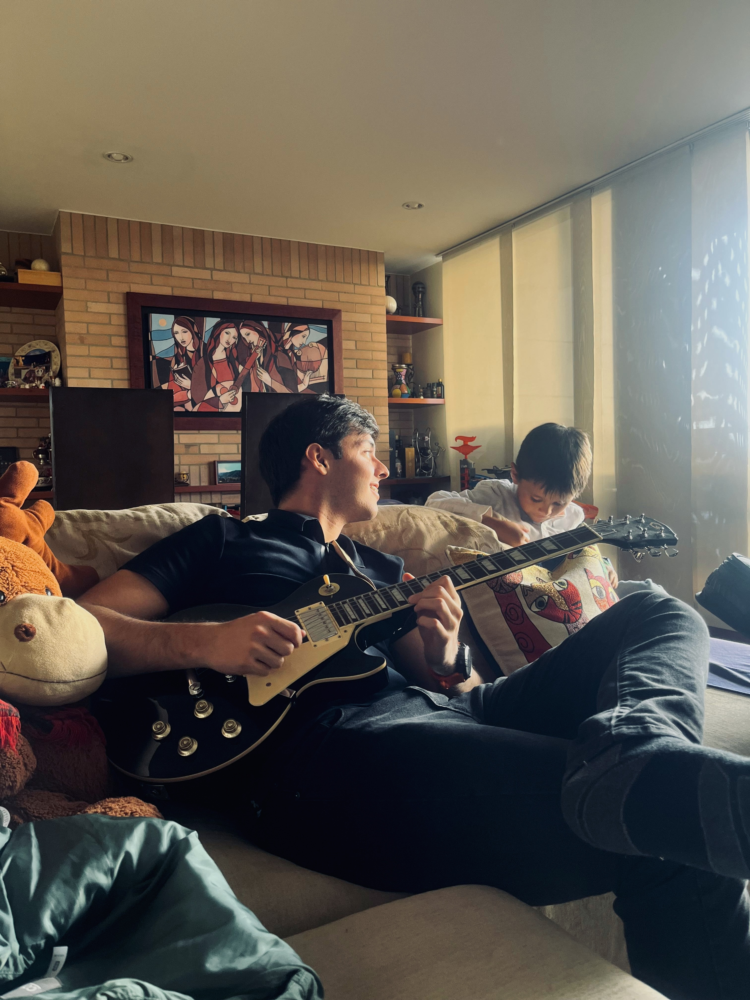
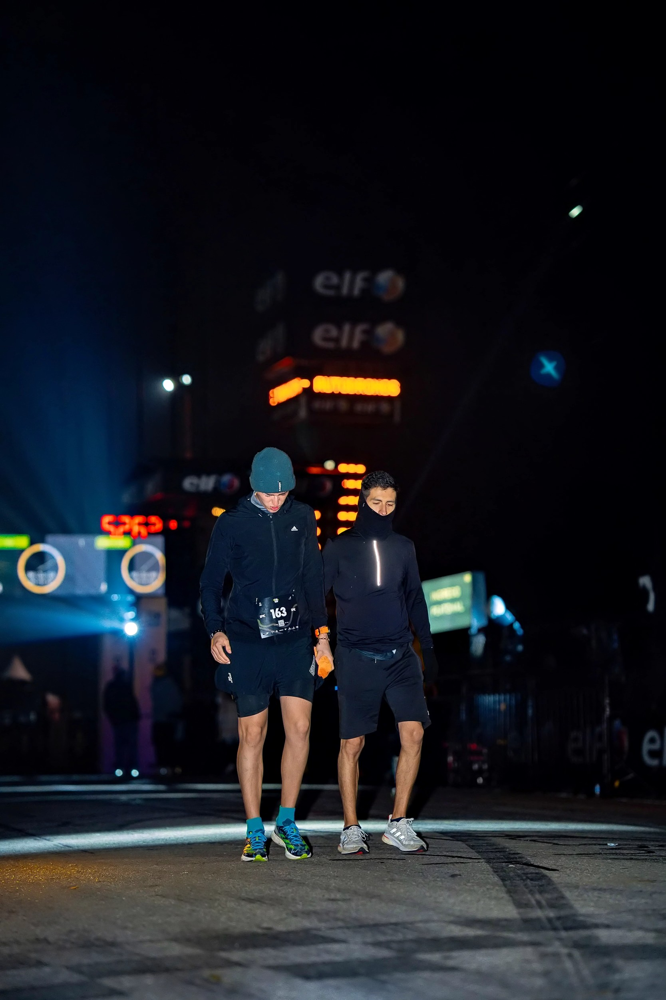
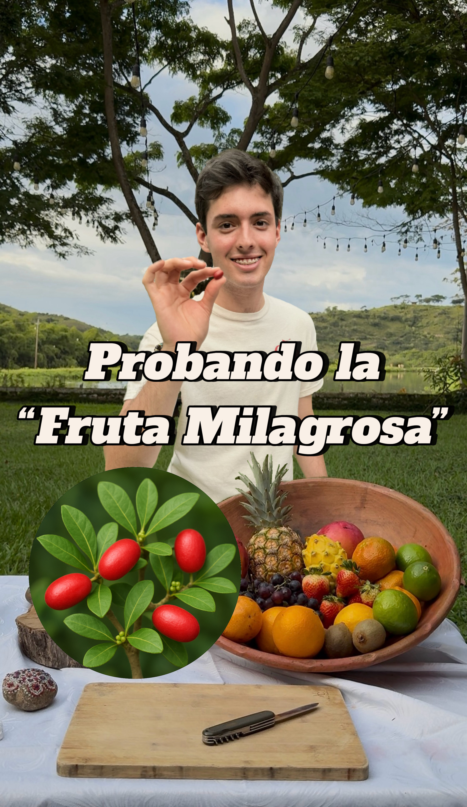

Intereses y Hobbies
Explorar nuevas tecnologías

Tocar guitarra
Correr
montar a caballo

Grabar videos
Soy un estudiante apasionado por la tecnología, el aprendizaje continuo y la mejora de procesos. Mi objetivo es desarrollarme como un profesional avanzado en el campo de la informática, con un enfoque especial en la ciberseguridad. Me interesa comprender cómo proteger los sistemas, redes y datos, y aspiro a formar parte de equipos que enfrenten los desafíos tecnológicos del mundo actual mediante soluciones creativas y seguras.
Consolidar mis conocimientos en ingeniería informática para crecer profesionalmente en el área de desarrollo web y ciberseguridad, aportando valor a proyectos reales y aprendiendo de experiencias prácticas en el mundo laboral.
Fecha de nacimiento: 8 de diciembre de 2005
Ciudad: Bogotá D.C.
Teléfono: 3046019882
Correo Electrónico: mateoraca@unisabana.edu.co
Actualmente sin experiencia laboral formal.
Explorar nuevas tecnologías
Tocar guitarra
Correr
montar a caballo
Grabar videos
